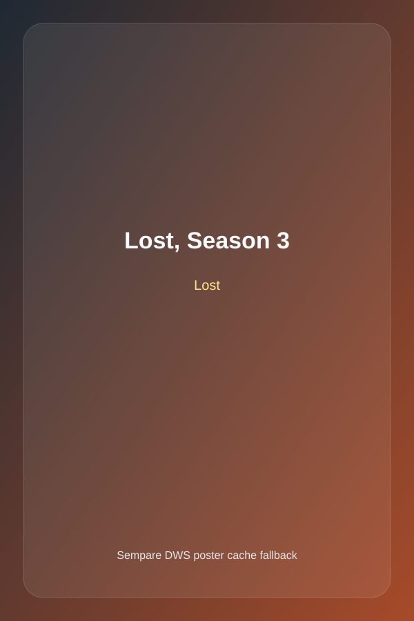

Chinook Album Page
Lost, Season 3
Artist: Lost
Sample track: A Tale of Two Cities
Lost, Season 3 delivers 26 tracks by Lost and contributed 21.89 in tracked Chinook sales.

Chinook Album Page
Artist: Lost
Sample track: A Tale of Two Cities
Lost, Season 3 delivers 26 tracks by Lost and contributed 21.89 in tracked Chinook sales.